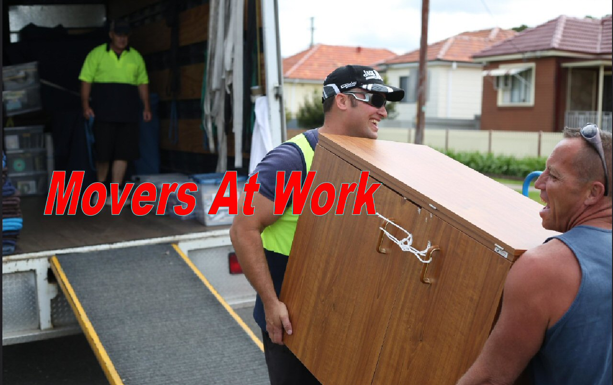

Cheap Movers in Sarasota
Posted on 23-03-2021 02:24 AM

The Sarasota Movers Services
Are you looking for a Cheap, Low proced, Affordable Movers Services in Sarasota Florida?
Then you have found us! Not every move calls for a full service moving company. Whether across town or across the country, you may just a small "Man and Van Operator" who can do the job quickly and efficiently at a resonable rate. While it is possible to do a DIY move, even for the longest moves, you should think about a few things before you decide. While most self moving companies are very trustworthy and provide you with reliable equipment for your move, you need to pay attention to the following before you sign anything.
By carefully selecting a moving company and become an informed consumer, you can save money and avoid potential headaches later. Here are tips to help you: get estimates from at least three companies will allow you to compare and confirm if the estimates are reasonable. In Sarasota you will find that all of the Movers you find on line will be registered and licenced to provide mover services
Best Movers in Sarasota County Florida

The Florida Mover Services of Sarasota are here to help whether you’re relocating a household or business, and they can help with long-distance moving to or from Sarasota FL. The company assigns each client a personal moving coordinator and offers full-service packing, loading, unloading, furniture and appliance assembly and climate-controlled storage options. All The Florida Mover Services of Sarasota go through an in-house certification process to ensure that you, our clients, get the best possible service.
The Florida Mover Services of Sarasota handles long-distance and local moves and has positive reviews about the professionalism of the movers. Their prices are all-inclusive, so you won’t pay an additional fuel charge or surcharge.
This Movers and Man and company provides free boxes for local moves. They specialize in senior moving and relocation. You can hire two movers for $99/hour, or up to four movers for $198/hour. Reviewers highlight the company's customer service and efficiency.
House Removals and Man with a Van covering the Whole of Florida
Based in central Sarasota FL, s a reliable, affordable and professional removals company that promises to drive down prices while improving on quality. From our man and van services to our house removal and office relocation services, we aim to surpass your expectations and deliver an exceptional service.
Moving home is one of the most exciting life events but also has the potential to be one of the most stressful. At The Florida Mover Services of Sarasota we can help by providing a hassle-free and fully managed house removal service in Sarasota, Venice, Nokomis,Engelwood,Northport, University Park, Palmer Ranch, Bradenton and the surrounding areas. Whether you just need a van and man for a small studio apartment move or need a full lorry and a team of 2 or 4 people, we’ll make sure your removal is well managed.
Van and man service in Sarasota is a perfect solution for a single item relocation or small light moves and with more men added, for all your moving needs. Hire a man and van service from a legitimate trusted registered moving company for house removals or office moves 7 days a week. Van plus man = happy move.
The Florida Mover Services of Sarasota removals & storage company offering a range of quality and competitive services throughout the Area. We pick up in all areas of Sarasota County and the home Venice FL, providing any removal related services you may require from full flat and house removals to man and van services. We provide a removal service which will make your moving day as stress free as possible, our rates are highly competitive and our aim is to ensure that our clients always recommend us.
GET YOUR FREE CUSTOM MOVING QUOTE TODAY!
Full packing service, packing materials and boxes – we offer full packing services as well as a full range of any packing materials including wardrobe boxes, blankets, full line of the packing boxes: book, china, picture boxes, paper, tape, and bubble wrap and customized crates. We are also specialize in piano and fine art moving. Many customers decide to pack themselves, and we will happily coach you on how to do it. If you’d like our help packing, we can provide a very reasonable quote for you. Free of charge written estimates/ free visual estimates – we come to your location 7 days a week, during the day or evening, whenever it is convenient for you. Our written moving estimate will outline all the costs and expenses associated with your move.
The Florida Mover Services of Sarasota is a State wide company that offers state-to-state moves from Sarasota city. Customers are assigned a moving coordinator to help at each step of the moving process. Services include full-service packing, fragile-only packing, loading, unloading, storage, and furniture and appliance assembly.
For your free in home estimate!! the movers, inc. Is a full service moving and storage company offering a wide variety of services to our customers. We offer experienced movers, familiar with handling and coordinating your residential, commercial, and long distance moving! no subcontracting or temp service! moving your home? your business? across the country? call us today!!
Absolutely. You can receive a free quote on our website for your upcoming move. Whether you are moving into a home, an apartment, or a high rise, we will tailor our services to fit all your needs. There are enough personal challenges to deal with when moving across state lines. At moving apt, we want to handle the move for you, so you can focus on more important matters. So go ahead. Get movers quote online today and be stress-free tomorrow.
Your move should be easy and stress-free, no matter the distance or size. Receive a custom quote from united van lines, designed to meet your moving timeline, budget and unique needs.
Looking for long distance movers in Sarasota?
The Florida Mover Services of Sarasota can offer affordable Long-distance movers transport your belongings across the country for you. No more renting a trailer and road-tripping from state to state with your entire house hitched to your bumper. Long-distance movers make the move happen so you can fly to your new home, suitcase in hand, and wait for your furniture to arrive. Nationally, the average price range for long-distance movers is $1,490-$2,230. The distance you are moving and the number of cubic feet the movers have to transport will both affect cost. Another factor in long-distance moving costs is whether you choose to pay for an exclusive move or a consolidated move.
As you begin interviewing moving companies, there are a number of points to cover before you retain the services of any one mover. For instance, talk about insurance with each of the moving companies you interview. Each companies has to carry cargo insurance, so there is some coverage, but see if your homeowners insurance will cover movers and packers handling your belongings. If you're hiring long distance movers, they need to have appropriate insurance for crossing state lines. They should also be bonded to cover accidents during the handling of your things during the moving and storage service.
The Florida Mover Services of Sarasota is afull-service moving company can handle local and long-distance moves. Reviewers overall have positive things to say about the movers, including that they’re efficient and professional. The company has an a+ rating from the bbb.
Considering its strong reputation, variety of services, and years of experience, you might expect to charge premium rates. But we’ve found the company’s prices to be very competitive compared to other long-distance movers. Of course, your exact price will depend on the size, distance, and date of your move, but to help you get a rough idea of what an ivl move costs, we requested a quote for a 2,000-mile move for a two-bedroom home. .
Whether you need a large or small amount of help when you are moving home, we can give you the assistance you need with our Sarasota Florida man and van removals. We can help with a range of different home removals services in the area, so that you are never left needing anyone else in terms of services. We can help with planning, packing, moving and unloading, so that all bases are covered on your moving home process. We can plan to fit into your budget so that there are never any nasty surprises, as we know that moving can be extremely expensive in the first place.
The Florida Mover Services of Sarasota Man and a van services are very popular with people in Sarasota who are moving a smaller amount of furniture. If you are one of many young people who rent an apartment in the area then our man and van option will be great for your removal. We know the best ways to get the job done safely and securely, so that there is no chance that you will be left with any issues afterwards. When you are in need of great deals on such man with van services in sw7, then you will find that we can help with our incredibly affordable rates.
You will not do better than coming to us! our staff at The Florida Mover Services of Sarasota are friendly and know the whole of Sarasota district well, so that you are never concerned with getting lost. Our vans have gps systems in place, so that there are no issues regarding directions and our teams will happily help you to load and unload. Our van and man service in south kensington is great for small moves to south Florida, or just getting little jobs done that require something a bit bigger than a car!.